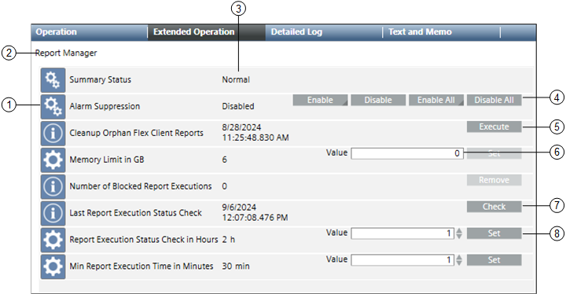

The Extended Operation tab displays the list of properties associated with the Report Manager, the current value of the properties, and command buttons for initiating commands on properties.

Name
Description
1
Properties
Displays the name of one or more properties associated with the report manager.
Summary Status: Displays the summary status of the report manager.
Alarm Suppression: Displays alarm suppression status of the report manager.
Cleanup Orphan Flex Client Reports: Displays the date and time of the last cleanup of the orphan flex client reports.
Memory Limit in GB: Allows you to define a memory limit in GB.
Number of Blocked Report Executions: Displays the count of blocked report executions.
Last Report Execution Status Check: Displays the date and time of the execution status of the last report.
Report Execution Status Check in Hours: Defines a check (in hours) for the report execution status.
Min Report Execution Time in Minutes: Defines the minimum report execution .time (in minutes). This ensures that if a report is in queue for more than the defined time, the report execution is blocked.
2
Object Name
Displays name of the selected object.
3
Current value
Displays the current value of each property.
4
Command buttons
Displays the following commands that you can initiate:
Enable: Allows you to select an event class and enable the alarm suppression for the report manager.
Disable: Disables the alarm suppression for the report manager.
Enable All: Enables the alarm suppressions for all event classes of the report manager.
Disable All: Disables the alarm suppressions for all event classes of the report manager.
5
Execute
Executes the cleanup orphan flex client reports and displays the execution time stamp.
6
Value field
Allows you to enter desired values.
7
Check
Displays the last report execution status time stamp.